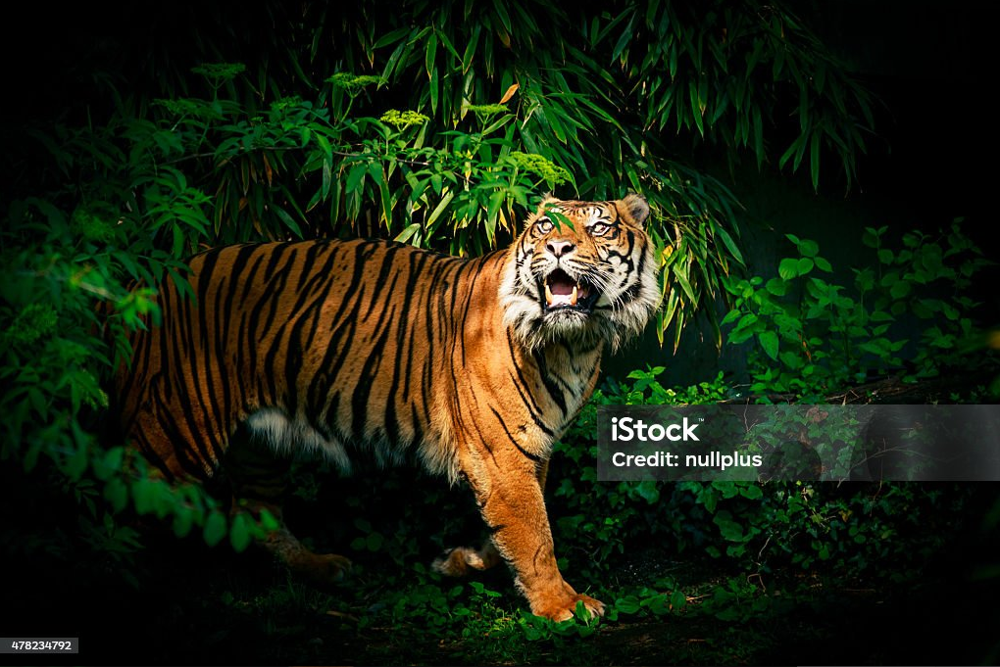

Responsive website
Viewport meta tag
CSS relative units
Body max width and center align (1140px)
Image Fluid
Two Column flex and use media quries with flex direction column
Multi Column: Grid Layout
Menu Responsive : We will learn after JS
